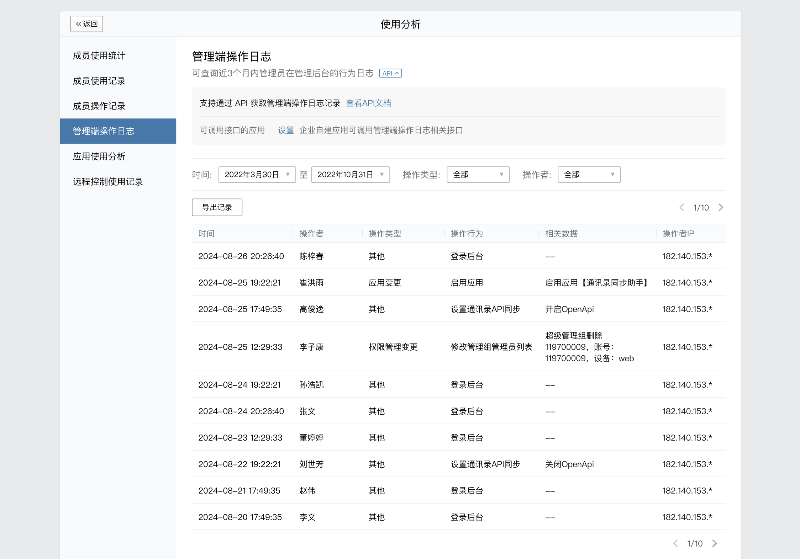

目录
管理端操作日志，可以在管理端“使用分析”中查看。为了方便企业对接内部系统，设定相应规则以进行定时的安全预警，允许通过接口读取。

若要调此接口，需要在上图中“API”栏，配置到“可调用接口应用”列表。
因为成员操作记录数据量较大，该接口设计为增量读取接口，且有较严格的频率限制。开发者需酌情定时调用，读取合适的时间段的记录。
请求方式:POST(HTTPS)
请求地址: https://qyapi.weixin.qq.com/cgi-bin/security/admin_oper_log/list?access_token=ACCESS_TOKEN
请求示例
{ "start_time": 1724256000, "end_time": 1724860799, "oper_type": 1, "userid": "sam", "cursor": "xxxxx", "limit": 2 }点击复制
参数说明:
| 参数 | 必须 | 类型 | 说明 |
|---|---|---|---|
| access_token | 是 | string | 调用接口凭证 |
| start_time | 是 | uint64 | 开始时间 取值范围：不早于180天前 |
| end_time | 是 | uint64 | 结束时间 取值范围：大于start_time，小于当前时间。开始时间和结束时间之间的跨度不能超过7天。 |
| oper_type | 否 | uint32 | 操作类型。不填表示全部 取值范围目前支持如下： 2 - 权限管理变更 3 - 成员与部门变更 7 - 其它 8 - 应用变更 11 - 通讯录与聊天管理 12 - 企业信息管理 13 - 外部联系人管理 |
| userid | 否 | string | 操作者userid |
| cusor | 否 | string | 分页游标。不填表示首页 |
| limit | 否 | uint32 | 最大记录数。不填默认最多获取400个记录 取值范围：1 ~ 400 注意：不保证每次返回的数据刚好为指定limit ，必须用返回的 has_more 判断是否继续请求 |
1. 接口调用产生的操作日志（如通讯录同步助手）不会返回。
2. 默认返回所有管理端操作日志，不会进行应用可见范围的筛选。
3. 接口调用频率限制为600次/分钟。
权限说明: （需具有「获取管理端操作日志」权限）
返回结果:
{ "errcode": 0, "errmsg": "ok", "has_more": true, "next_cursor":"xxxx", "record_list": [ { "time": 1724256000, "userid": "sam", "oper_type": 1, "detail_type": 2, "detail_info": "姓名：shel；手机号：15622244106", "ip": "183.40.88.11" }, { "time": 1724256400, "userid": "sam", "oper_type": 1, "detail_type": 2, "detail_info": "姓名：abel；手机号：15622244108", "ip": "61.40.122.129" } ] }点击复制
参数说明:
| 参数 | 类型 | 说明 |
|---|---|---|
| errcode | int32 | 返回码 |
| errmsg | string | 错误码描述 |
| has_more | bool | 是否还有下一页 |
| next_cursor | string | 下一页的分页游标。不同过滤条件的的cursor不能混用 |
| record_list | obj[] | 记录列表 |
| record_list.time | int64 | 操作时间 |
| record_list.userid | uint64 | 操作者userid |
| record_list.oper_type | uint32 | 操作类型 |
| record_list.detail_type | uint32 | 操作行为。详见后面说明 |
| record_list.detail_info | string | 相关数据 |
| record_list.ip | string | 操作者ip |
操作行为，目前有以下类型：
1 - 绑定手机
2 - 解绑手机
3 - 修改密保邮箱
4 - 修改登录密码
5 - 新增分级管理员
6 - 删除分级管理员
7 - 更改操作权限
8 - 更改管理范围
9 - 新增部门
10 - 删除部门
11 - 移动部门
12 - 移动成员
13 - 删除成员
14 - 新增成员
15 - 更改成员信息
16 - 批量导入
17 - 更改企业名称
18 - 更改企业logo
19 - 更改企业信息
20 - 更改消息设置
21 - 更改部门信息
22 - 发送公告
23 - 登录后台
24 - 移除成员
25 - 发送邀请
26 - 新增应用
27 - 删除应用
28 - 修改应用主页
29 - 修改应用可见范围
30 - 导出通讯录
31 - 新增管理组
32 - 删除管理组
33 - 修改管理组名称
34 - 修改管理组通讯录权限
35 - 修改管理组应用权限
36 - 修改管理组管理员列表
37 - 转让创建人
38 - 新增标签
39 - 删除标签
40 - 变更标签成员
41 - 修改标签名称
42 - 安装套件应用
43 - 删除套件应用
44 - 删除通讯录套件
45 - 安装通讯录套件
46 - 开通企业微信
47 - 新增素材
48 - 编辑素材
49 - 删除素材
50 - 隐藏部门/成员
51 - 限制查看外部门
52 - 限制查看所有人
53 - 添加发票信息
54 - 修改发票信息
55 - 删除发票信息
56 - 删除套件应用
57 - 开启自动邀请成员使用
58 - 关闭自动邀请成员使用
59 - 变更应用权限
60 - 增量更新成员
61 - 全量覆盖成员
62 - 全量覆盖部门
63 - 导出客服列表
64 - 删除客服
65 - 启用应用
66 - 停用应用
67 - 添加审批模板
68 - 启用审批模板
69 - 停用审批模板
70 - 删除审批模板
71 - 修改审批模板
72 - 修改审批规则
73 - 删除审批记录
74 - 添加审批假期类型
75 - 删除审批假期类型
76 - 修改审批假期类型
77 - 导入审批假期余额
78 - 修改个人假期余额
79 - 添加打卡规则
80 - 修改打卡规则
81 - 删除打卡规则
82 - 修改外出打卡设置
83 - 添加汇报模板
84 - 启用汇报模板
85 - 停用汇报模板
86 - 删除汇报模板
87 - 修改汇报模板
88 - 修改汇报规则
89 - 导出汇报记录
90 - 导出审批假期余额
91 - 导出审批记录
92 - 导出打卡记录
93 - 通过提交资料认证
94 - 法定代表人验证
95 - 支付验证
96 - 通过微信公众号授权验证
97 - 通过微信公众号授权认证
98 - 设置进入企业二次验证
99 - 修改申请加入企业设置
100 - 修改客户端启动页
101 - 离职成员管理
102 - 设置一周小结
103 - 修改微信插件logo
104 - 修改微信插件功能介绍
105 - 修改微信插件设置
106 - 设置邀请同事领红包
107 - 设置群成员人数上限
108 - 设置消息阅读状态
109 - 设置全员群
110 - 自动创建部门群
111 - 设置成员资料显示
112 - 设置成员可修改字段
113 - 设置成员排序规则
114 - 设置聊天显示水印
115 - 设置通讯录水印
116 - 设置未使用成员接收消息提醒
117 - 设置手机号安全查看
118 - 设置成员对外联系人信息显示
119 - 修改外部联系人权限设置
120 - 导出相关操作记录
121 - 修改工作台显示
122 - 设置成员可见第三方应用入口
123 - 启用小程序
124 - 停用小程序
125 - 添加聊天附件栏小程序页面
126 - 编辑聊天附件栏小程序页面
127 - 删除聊天附件栏小程序页面
128 - 应用与小程序分组编辑
129 - 设置成员可见连接微信入口
130 - 设置通讯录API同步
132 - 设置安全查看信息
133 - 导出全量成员查看记录
134 - 导出指定成员的查看记录
135 - 会话内容存档修改IP地址
136 - 会话内容存档修改消息加密公钥
137 - 设置会话内容存档成员的语音/视频通话功能
138 - 设置会话内容存档成员的文件传输助手
139 - 设置会话内容存档的服务须知
140 - 会话内容存档修改开启范围
141 - 设置会话内容存档的会话限制
142 - 主体资料验证
146 - 会话内容存档设置消息关键词拦截
147 - 新增部门
148 - 删除部门
149 - 修改部门
150 - 新增学生
151 - 删除学生
152 - 修改学生信息
153 - 新增家长
154 - 删除家长
155 - 修改家长信息
156 - 批量导入
157 - 修改设置
158 - 设置家校通讯录API同步
159 - 查看Secret
160 - 设置接收事件服务器回调
161 - 重置Secret
162 - 批量设置成员信息
163 - 删除并禁用应用
164 - 关闭成员授权
165 - 取消应用禁用
166 - 修改应用授权方式
167 - 开启成员授权
168 - 开启管理端登录短信验证
169 - 关闭管理端登录短信验证
170 - 调整自建应用为代开发自建应用
171 - 设置通讯录人数显示
172 - 企业可信IP
173 - 授权通讯录编辑权限
174 - 取消授权通讯录编辑权限
175 - 群成员列表展示性别
176 - 删除成员（操作离职）
177 - 批量导入花名册
178 - 批量更新花名册
179 - 代运营服务人员权限变更
180 - 导出通讯录（花名册）
181 - 企业微信认证
182 - 批量导出
185 - 停用Secret
186 - 停用接收事件服务器
189 - 创建知识集
190 - 修改知识集
191 - 删除知识集